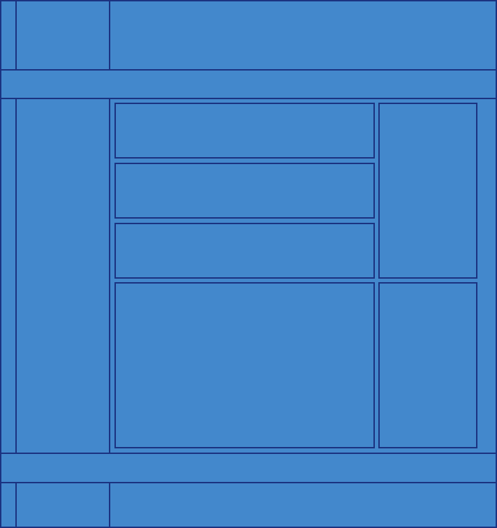

Om denne nettsiden
Nettsiden er en videreutvikling av, eller i hvert fall av ideen/stilen av den første siden jeg lagde i GRIT (denne). Var på forhånd bestemt på at jeg ville lage en side hvor alt innhold er sentrert. Liker godt oppsettet samt muligheten for bakgrunnen på sidene, og gjør det mye enklere å jobbe med innholdet når en slipper å forholde seg til hele siden den uendelige mengden skjermstørrelser.
Tema
Farge teamet er basert på Overwatch, spesifikt på denne fargepaletten, som igjen er hentet fra en rekke offisiell Blizzard bilder/logoer, de fleste farge kodene kjente jeg igjen da jeg her brukt dem andre prosjekter før… Bakgrunnsbilde er også fra Overwatch/av Blizzard, de har en åpen lisens for bruk av sine bilder/materiale her, i hvert fall så langt jeg forstår meg på håpløst knotete legal stuff… (og vips så har jeg noe legal stuff å putte i footeren også, så slipper den å være tom...) har også planer om å kjøpe lisens for de offisielle Overwatch fonten, Big Noodle Too, (mulig allerede gjort når jeg leverer /første gang noen leser dette) for å fullføre teamet. Igjen noe jeg har brukt mye i prosjekter og kunne tenke meg å ha, og den var nokså billig da jeg antar jeg holder meg langt unna 10000 pageviews i måneden…
Inspirasjon
Frammgangs måten min for inspirasjon var gå gjennom alle de mest brukte bokmerkene mine i chrome ++. I tillegg gikk jeg på en del sider som hadde listet opp andre sider med intresant eller uvanlig design, og selv om det var mye stilig fant jeg også mye upraktisk, så gikk heller for noe litt mer standard for nå… likte imidlertid denne ganske godt, definitivt lagret for inspirasjon til senere…
| URL | Beskrivelse |
|---|---|
| https://www.youtube.com/ | Du må være logget inn for å se outlook eksemplet, prtscrn her. Enkel navigasjons bar på toppen og en større med plass til mer tekst ned langs siden. Det standarde "mobil app" designet… setter opp flere nettopp fordi det er et så vanlig design. |
| https://go.twitch.tv/ster | |
| https://outlook.live.com/ | |
| https://www.reddit.com/ | Reddit i div versjoner, er for det meste det samme av det jeg så etter. Lange tynne "ingresser" på forsiden i forhold til å linke opp artikklene på forsiden. Som vist i skissen hadde jeg også planlagt en uavhengig rad med annen info ned langs høyre, men droppet det da det ikke var nødvendig på dette tidspunktet, og hadde antagelig bare blitt rotete. Main elementet er imidlertid satt opp så jeg enkelt kan fylle det med hva som helst samt utvide siden i bredden, så det er lett å sette opp om jeg skulle ønske. ideen generelt var å kunne putte hva som helst i content delen… |
| https://www.reddit.com/r/Overwatch/ | |
| https://www.reddit.com/r/Rainmeter/ | |
| https://hiof.instructure.com/ | Likte godt den venstre dokkede navigasjons baren, å ville gjenre ha noe lignende. Synnes jeg fant en fin løsning med tanke på at jeg har sentrert content… Også planen å putte en logo eller ikon eller noe i topp venstre hjørne, men vet ikke helt hva og var ikke tid/prioritet… tenkte også mulig å ha den til å endre seg på artikkelsidene etter innhold. |
| http://steamcommunity.com/id/KRUZiiK/ | Sentrert content m/bakgrunn på sidene, finnes i utallige versjoner. Kunne satt mye som eksempel her, men steam er den først jeg personlig tenker på ettersom jeg en gang brukte unodvendig mye tid på å se gjennom de uendelig mange profil bakgrunnene uten å egentlig finne stort jeg likte... (og så får jeg linke steamen min da, bare å legge meg til, bruker den ikke mye lengre da, og spiller bare døde spill som tf2 når jeg er der...) |
{kind=link}
Sluttnote
Utover font har jeg lyst å finne ut om jeg kan få til en slags parallax effekt med bakgrunnen, hvor bilde scroller relativt til innholdet, så begge er på toppen /bunnen samtidig, antagelig noe jeg kommer til å bruke mye når jeg finner ut av det.
Vet ikke om vi kommer til å bruke denne nettside noe videre, oppgave teksten får det jo delvis til å høres sånn ut, men jeg har definitivt fått sansen for dettet, så kommer nokk til å fortsette å pynte og iterere på en versjon for meg selv i hvert fall.